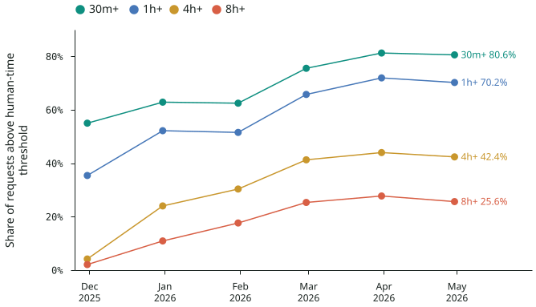

Agents are changing how we work
“users moved from only asking Codex for one answer at a time into increasingly orchestrating multiple agent tasks over the course of a day”
AI use is shifting from single answers to delegated, longer-horizon work.
